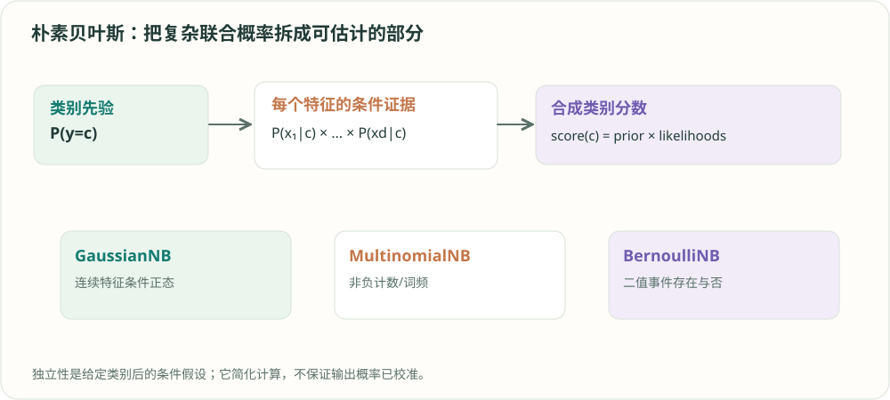
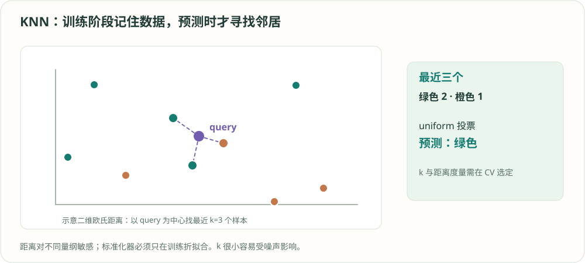

朴素贝叶斯与 KNN：从概率证据到距离投票
一个模型通过类别先验与条件似然计算类别分数，另一个在预测时搜索近邻。用公式、计数表和距离图理解两者适用的数据类型、尺度敏感性与高维失败模式。
01 · 两种极简分类器的出发点完全不同
朴素贝叶斯（Naive Bayes，NB）把预测理解为“看到证据后哪一类更可能”；K 最近邻（KNN）把预测理解为“与这个查询点最相近的训练样本属于哪些类别”。前者需要估计类别先验与每个特征的类条件概率，后者主要保留训练样本并定义距离、邻居数量和投票规则。
它们没有谁在所有任务上更准确：文本的稀疏计数结构可能适合 MultinomialNB；少量经标准化的平滑低维数据可能适合 KNN；高维噪声、特征相关或距离语义不可靠则可能让两者分别遇到不同问题。
02 · 贝叶斯更新与“朴素”条件独立假设
对类别 y=c 与特征向量 x=(x₁,…,xd)，贝叶斯规则是 P(c|x)∝P(c)P(x|c)。其中困难部分是联合条件似然 P(x|c)；NB 的“朴素”假设将其分解为 ∏jP(xⱼ|c)。这是假定给定类别后各特征条件独立，不是说特征在整个总体中都独立。

分类时各类别使用同一个证据分母，比较未归一化分数即可。但数值计算时直接相乘许多很小的概率会下溢，因此通常在对数空间将连乘转成求和。即使类条件独立假设不严格成立，NB 仍可能具有不错的分类边界；它的 predict_proba 却可能因重复计算相关证据而偏向过度自信，需要校准检查。
03 · Gaussian、Multinomial、Bernoulli 模型不要混用
GaussianNB 为每个类别的连续特征分别拟合均值与方差，并以一维高斯密度相乘；它不要求整张数据表全局服从同一个高斯分布。MultinomialNB 更适合计数型或类似非负频率的特征，经常与词频矩阵结合；BernoulliNB 处理二值化事件，既考虑某词出现，也可考虑未出现。
直接将带负值的标准化连续特征输入 MultinomialNB 不符合其非负输入要求；把一组高度相关的特征当成独立证据也可能影响概率可靠性。对文本的不平衡数据，可进一步研究 ComplementNB 的具体假设，而不是默认更复杂变体总赢。
04 · Laplace 平滑如何处理未见过的词
如果某个词在一个类别的训练文本中从未出现，直接用最大似然计数给出的条件概率为零，会使类别似然连乘直接变成零。加法平滑给每个词一个伪计数 α，避免这一极端。设词表大小 |V|，类别 c 内词 w 的计数为 Ncw，该类总词计数为 Nc，则：
例如词表只有 3 个词：spam 类总词数 12，其中 free 计数 6；ham 类总词数 10，其中 free 计数 1，且 α=1。则 P(free|spam)=7/15，P(free|ham)=2/13。这不等于“7/15 的邮件是垃圾邮件”，也不等于将类别先验忽略后的最终后验。
05 · KNN：判断新样本的邻居到底是谁
KNN 分类时先计算查询样本到各训练样本的距离，再找出最近的 k 个邻居，按类别多数投票（uniform）或按距离加权。图中的查询点最近三个邻居有两个绿色、一个橙色，因此 k=3 且等权投票时预测绿色类。实际算法有各种索引结构来加速搜索，但预测本质上仍依赖存储的样本及选定距离。

k 小时决策边界可能很曲折并对噪声敏感，k 大时会将局部结构过分平滑；它还受到类比例及距离加权的影响。欧氏距离依赖量纲，面积、年龄或金额等混合特征未经处理就计算距离，通常缺乏合理语义。距离度量和 k 均应在训练开发集内选择。
06 · 维度灾难不是一句“高维一定失败”
高维空间体积增长快：在边长为 1 的超立方体中，固定边长 0.5 的子立方体占总体积的比例为 0.5^d。d=2 时是 0.25；d=10 时仅约 0.00098。这个例子说明局部区域在某种几何定义下迅速稀疏，但不是通用最近邻性能公式。
实际高维数据可能位于低维流形、经过有效表征学习，或具有适当的稀疏距离；此时近邻仍可有效。问题是随着无关特征增加，距离排序可能变得不稳定，搜索计算与内存需求也增大。需要通过可解释的距离、特征选择、降维和验证曲线判断，而非只看维度数值。
07 · 实验 A：基于词频的 MultinomialNB
这是无需下载的英语短文本演示。每条短信使用非负词计数，模型只在训练样本上学习词汇表和 NB 参数，不暗示这就是一个能用于真实邮件安全拦截的分类器。
import numpy as np
from sklearn.pipeline import make_pipeline
from sklearn.feature_extraction.text import CountVectorizer
from sklearn.naive_bayes import MultinomialNB
texts = [
"free offer claim now", "claim free prize", "free coupon prize",
"team meeting agenda", "project update meeting", "schedule team notes",
]
labels = np.array([1, 1, 1, 0, 0, 0])
clf = make_pipeline(CountVectorizer(), MultinomialNB(alpha=1.0))
clf.fit(texts, labels)
probs = clf.predict_proba(["free prize", "meeting notes"])
print("P(class | text):", np.round(probs, 3))
print("prediction:", clf.predict(["free prize", "meeting notes"]).tolist())
assert probs.shape == (2, 2)
assert np.allclose(probs.sum(axis=1), 1)依赖 Python 3.10+、NumPy、scikit-learn。实际任务应从训练开发数据中另划独立验证与测试；这个极小的示例只为说明模型 API 与词袋特征，未做泛化性能评估。
08 · 实验 B：只在开发集选择最近邻 k
使用内置 Iris 数据作多分类近邻演示，固定种子拆分开发与测试集，开发集的 3 折交叉验证比较不同 k。StandardScaler 被放进 Pipeline 内，避免交叉验证时从验证折偷看均值或尺度。
import numpy as np
from sklearn.datasets import load_iris
from sklearn.model_selection import train_test_split, StratifiedKFold, cross_val_score
from sklearn.pipeline import make_pipeline
from sklearn.preprocessing import StandardScaler
from sklearn.neighbors import KNeighborsClassifier
from sklearn.metrics import accuracy_score
X, y = load_iris(return_X_y=True)
Xdev, Xtest, ydev, ytest = train_test_split(
X, y, test_size=0.2, stratify=y, random_state=12)
cv = StratifiedKFold(n_splits=3, shuffle=True, random_state=12)
scores = {}
for k in (3, 5, 7, 11):
pipe = make_pipeline(StandardScaler(),
KNeighborsClassifier(n_neighbors=k))
scores[k] = float(cross_val_score(
pipe, Xdev, ydev, cv=cv, scoring="accuracy").mean())
chosen_k = max(scores, key=scores.get)
model = make_pipeline(StandardScaler(),
KNeighborsClassifier(n_neighbors=chosen_k))
model.fit(Xdev, ydev)
pred = model.predict(Xtest)
print("CV by k:", scores, "chosen k:", chosen_k)
print("held-out accuracy:", accuracy_score(ytest, pred))
assert len(pred) == len(ytest)
assert 1 <= chosen_k <= len(Xdev)这是单次保留测试评估。scoring 应结合实际业务错误成本更换，类别不平衡时不应只看 accuracy；若存在重复实体或时间依赖，分割器也需要改变。
09 · 应该如何选、何时不该选
若特征主要是短文本词频，NB 可以成为轻量可解释基线；若输入是定义明确、已缩放的低维连续数值，KNN 是直观且易诊断的基线。对高维、概率校准敏感或部署延迟严格的系统，必须进一步测试概率可靠性和预测成本。NB 的独立假设、KNN 的距离假设都比“模型类型”这个标签重要得多。